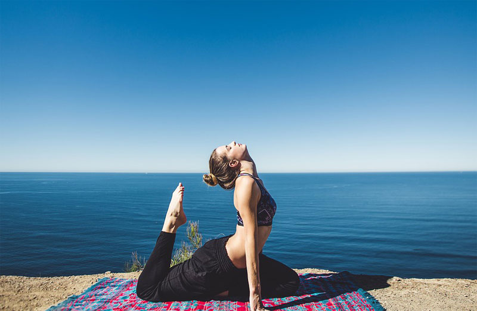

Влияние йоги на физическое и психическое здоровье
Влияние йоги на физическое и психическое здоровье может быть значительным и положительным. Практика йоги включает в себя физические позы (асаны), дыхательные упражнения (пранаяму) и медитацию, которые совместно способствуют достижению баланса и гармонии в организме. Физические асаны в йоге помогают укрепить тело, улучшить гибкость, выносливость и осанку. Они также способствуют улучшению кровообращения, лимфодренажа и общей физической формы.

Посредством практики дыхательных упражнений (пранаямы) йога помогает снизить уровень стресса и тревоги. Регулярная практика дыхания способствует улучшению функции легких, снижению артериального давления и стабилизации нервной системы. Медитация в йоге позволяет успокоить ум, улучшить концентрацию и сосредоточение, а также развить психическую ясность и осознанность. Она может помочь справиться с негативными эмоциями, улучшить настроение и общее психическое благополучие. Практика йоги также способствует укреплению иммунной системы. Она помогает снизить уровень воспаления в организме, улучшить пищеварение и общую жизненную энергию. Йога также может быть полезной в управлении хронической боли и улучшении сон. Она может способствовать расслаблению мышц, снятию напряжения и улучшению качества сна. Регулярная практика йоги может помочь улучшить осанку и выравнивание тела. Она способствует развитию силы и гибкости, а также укрепляет мышцы кора.
#2. Техники релаксации и медитации для улучшения здоровья
Техники релаксации и медитации играют важную роль в улучшении здоровья и общего благополучия. Они помогают снять напряжение, улучшить психическое состояние и достичь гармонии внутри себя. Одной из распространенных техник релаксации является глубокое дыхание. Сосредоточьтесь на вдохе и выдохе, регулируя и углубляя дыхание. Это поможет снизить уровень стресса и напряжения в организме.

Медитация также является мощным инструментом для релаксации и улучшения здоровья. Найдите удобное место для сидения, закройте глаза и сосредоточьтесь на своем дыхании или на мантре. Медитация поможет успокоить ум и улучшить внутреннюю гармонию.
Прогрессивная мускулярная релаксация - это техника, при которой вы постепенно и последовательно расслабляете каждую группу мышц в теле. Начиная с ног и двигаясь вверх, сознательно напрягайте и расслабляйте каждую группу мышц. Эта техника помогает снизить физическое напряжение и улучшить ощущение расслабления
Визуализация - это метод, при котором вы создаете ментальные образы в своем воображении. Можно представить себя на месте, где вы чувствуете себя спокойно и счастливо, таком как пляж или лес. Эта техника поможет вам расслабиться и отвлечься от повседневных забот.
Ароматерапия - это использование ароматических масел и эфирных масел для достижения релаксации. Лаванда, роза, эвкалипт или другие ароматы могут быть использованы для создания спокойной и расслабляющей атмосферы. Массаж - это еще одна эффективная техника релаксации. Прием массажа помогает снять мышечное напряжение, улучшить кровообращение и снизить уровень стресса. Активные методы релаксации, такие как йога или тай-чи, сочетают физические упражнения с дыхательны
#3. Здоровье и фитнес в цифровой эпохе
Здоровье и фитнес играют важную роль в цифровой эпохе, когда технологии становятся все более важной частью нашей жизни. Существуют различные способы, как цифровые инструменты и приложения могут помочь нам поддерживать наше здоровье и фитнес. Мобильные приложения для фитнеса и здоровья предлагают широкий спектр функций и возможностей. Они могут предложить персонализированные тренировки, трекеры для мониторинга физической активности, планировщики питания и советы по улучшению образа жизни.

Фитнес-трекеры, такие как умные наручные часы и браслеты, позволяют отслеживать нашу физическую активность, количество пройденных шагов, пульс, калории и даже качество сна. Они помогают нам быть более осведомленными о нашей активности и мотивируют нас двигаться больше.
Онлайн-тренировки и стриминговые платформы предлагают широкий выбор тренировок, доступных в любое время и в любом месте. Мы можем выбирать между различными видами тренировок, включая йогу, аэробику, силовые тренировки и танцы. Это удобно и позволяет нам заниматься спортом даже в своем доме.
Александр Смирнов
Статья отлично подчеркивает важность психического здоровья и его влияния на общую жизнь. Буду обязательно применять рекомендации по медитации и стрессоустойчивости.
Иван Иванов
"Я уже знал, что физическая активность полезна, но статья показала мне, как важно включать в режим тренировок различные виды упражнений для улучшения общей физической формы и здоровья."
Петр Ковалев
Подход к здоровью с разных сторон - это то, что мне нравится в этой статье. Она подтолкнула меня задуматься о важности социальных связей и отдыха для общего благополучия.
Дмитрий Павлов
Удивительно, как связаны сон и здоровье. После прочтения статьи я понял, что нужно уделить больше внимания своему режиму сна и созданию комфортной обстановки в спальне.
Андрей Соколов
Спасибо за прекрасную статью! Теперь я понимаю, почему так важно поддерживать баланс между работой и отдыхом для сохранения своего физического и психического здоровья.
Николай Лебедев
"Очень интересная статья! Я узнал много нового о важности здорового питания и регулярной физической активности для общего благополучия."